RoyaleSim in depth¶
The full engine page: building from source, what the engine does, how fast and how accurate it is, and its status. The short version is the README.


A Clash Royale battle engine you drive from Python. It plays the whole match: elixir, hands, deploys, walking, targeting, fighting, spells, towers, overtime and the crowns.
Positions are in subtiles: 18,000 to one arena tile. Every coordinate this engine takes and returns uses them, so the arena is 324,000 by 576,000 and a tile centre is a multiple of 18,000 plus 9,000.
Recorded battle data uses a different unit: 1,000 to a tile (millitiles). The two are a factor of 18 apart, and nothing in either will complain if you mix them -- a tap at the wrong scale lands somewhere legal, the engine accepts it, and the units simply walk to the wrong place. If you are writing an adapter, convert at the boundary and assert the scale there:
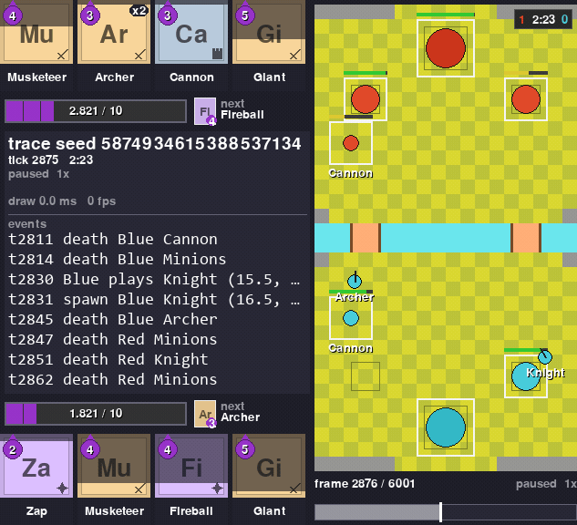
If you are training a bot, this is the thing your bot plays in. There is no game to run and nothing
to connect to. You install a Python module, royalesim, and call it.
Two things it gives you that a fan simulator usually does not.
The same seed gives you the same battle, every time, on any machine. The engine is Rust and it does whole-number arithmetic only, so nothing drifts between machines. A battle that went wrong once can be made to go wrong again.
The movement rules were measured, not guessed. How units choose routes, walk, and push each other apart was measured against recordings of real battles. Every constant in the engine records which game version it was measured on, and whether it is a guess or a measurement. The engine is not as accurate as the real game, and the "How accurate is it?" section below gives the number and says where it is still wrong.
It is also the engine under RoyaleGym, the environment layer bots train in. Install steps are below, under "Install".
What it does¶
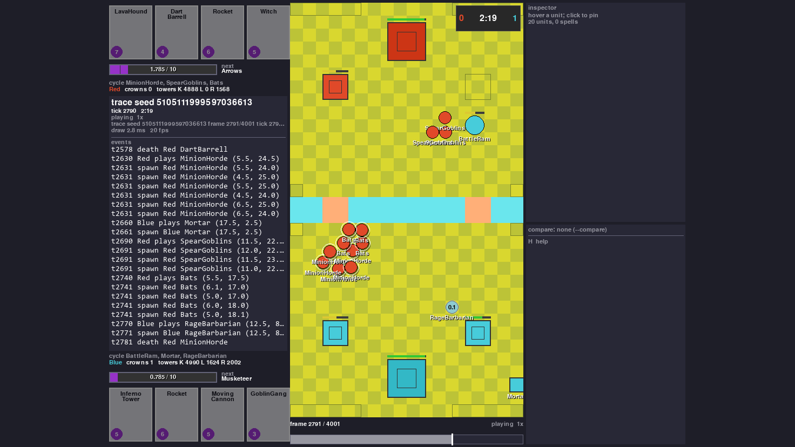 Run a whole battle from Python One call per step. Hand in your deploys, advance N ticks of 50 ms each, read the board back as JSON. |
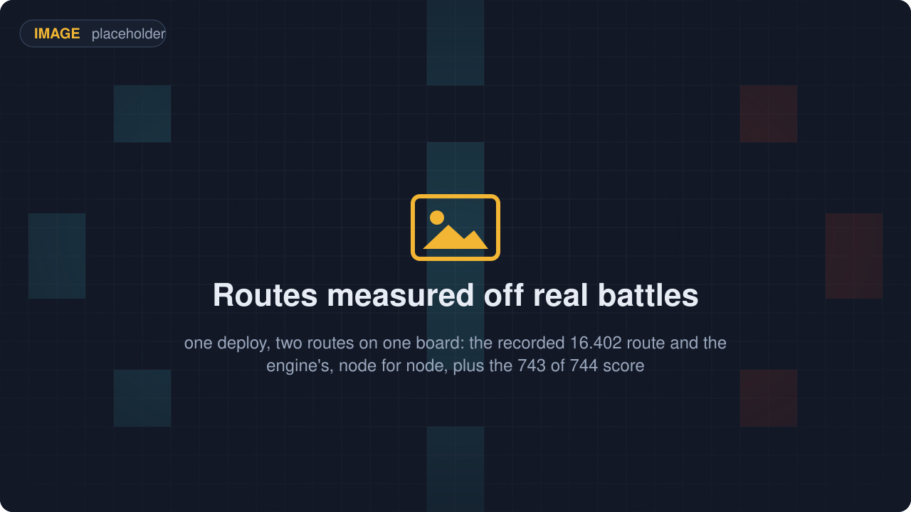 Units find their own way, the way the game does Of 744 recorded routes, 616 from real battles and 128 from an offline corpus, the engine walks 743 node for node. |
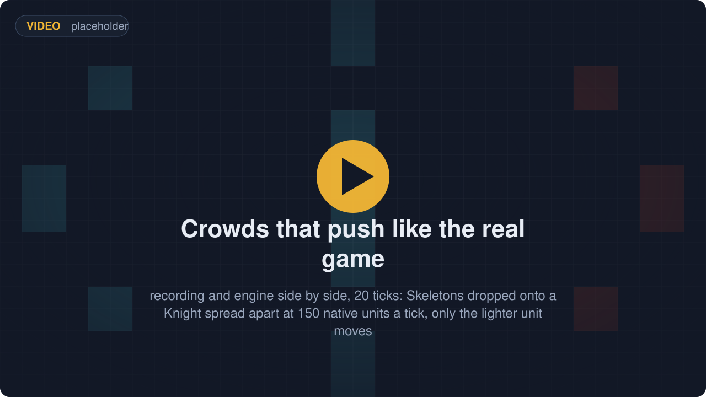 Crowds push each other like the real game Over 31 recorded captures, 99.24% of every unit's per-tick positions come out exact. |
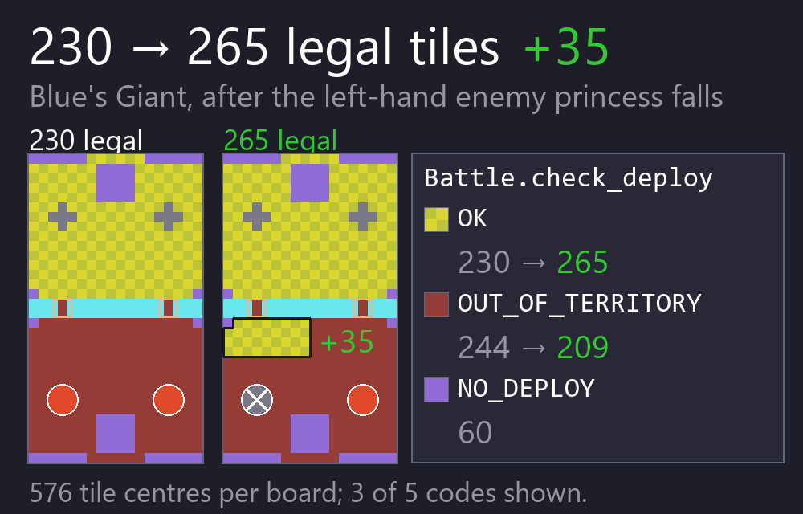 Ask whether a card can go there Name a card and a tile. The engine answers with one of 14 codes, such as WATER, OUT_OF_TERRITORY or TOO_EARLY. Once play opens at tick 90, a Giant has 230 of 576 tiles, and 35 more once a tower falls. |
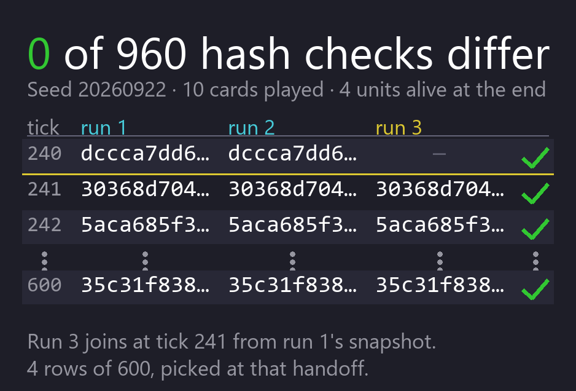 Same seed, same battle Whole-number arithmetic and a hash of the board every tick. Two runs of one seed, plus a third resumed from a snapshot: 960 checks, none differ. |
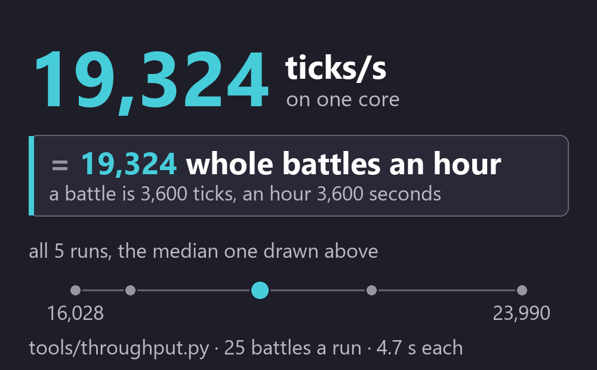 The engine is not the slow part A three-minute battle is 3,600 ticks and an hour is 3,600 seconds, so the tool's ticks per second is also battles per hour on one core. Yours will differ with load. |
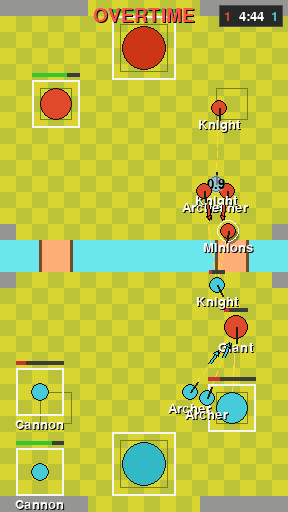 Cards, towers, spells, overtime The engine plays 136 of the 145 cards in its card table (the 15.535 client's, plus the Minion Giant) and refuses 9, all event-only, with a reason for each, and fifty-eight of them also in their evolved or hero form. Counted by the loader itself (its census at `ca49eba`, `cards.json` FNV-1a 64 1b8121b10c3222cd). That table is committed, so a clone reads the same one. A match runs through overtime to the 3-crown win or the tiebreak. |
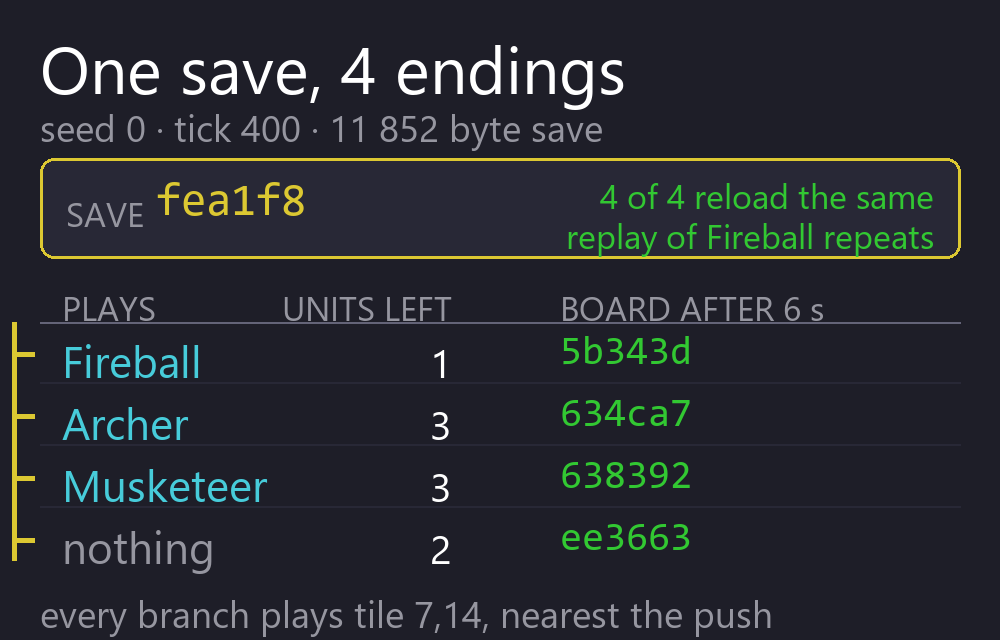 Save a battle, branch it A battle saves to about 12 kB and loads back to the identical state hash. Four branches off one save, each reaching a different board. |
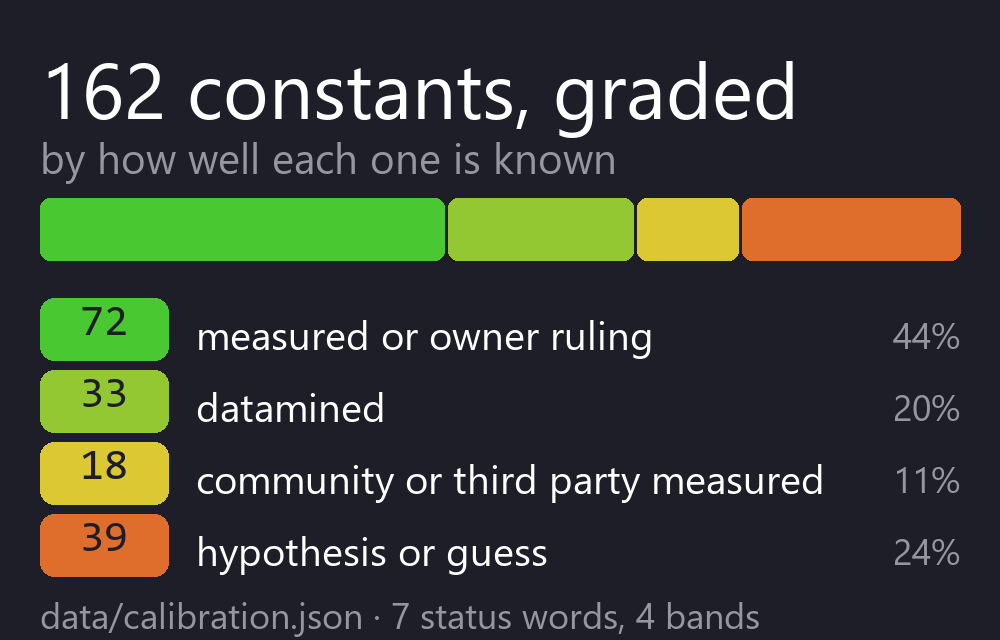 Every number says how well it is known All 373 carry a status from guess to measured, and 258 are measured (RoyaleSim e70e458). 318 also name the rivals they were chosen against, and 327 say what would change them. A ledger entry is one `section.KEY`, which is how the docs and the code address them. |
Install¶
You need Python 3.12 and Rust 1.80 or newer with cargo.
The commands below are for Windows PowerShell, the shell that opens by default on Windows 10 and
11. There is no separate recipe for the other platforms. On macOS and Linux run the same commands
with two changes: write the paths with forward slashes, and read every .venv\Scripts\ as
.venv/bin/.
The five stages set up the four repos the stack needs, because they expect to sit side by side in one folder. Run one line at a time and look at what it printed before you run the next. That way you know which line failed if one does. Stages 1 to 4 are the engine. Stage 5 is the rest of the stack.
Stage 1. Make the folder and clone the four repos¶
This makes the folder everything else lives in, then downloads four small repos. Nothing is built yet and nothing is installed yet.
mkdir Royale
cd Royale
git clone https://github.com/RoyaleGym/RoyaleSim.git
git clone https://github.com/RoyaleGym/RoyaleGym.git
git clone https://github.com/RoyaleGym/RoyaleViser.git
git clone https://github.com/RoyaleGym/RoyaleLearn.git
You are now in the Royale folder. Stages 2 to 5 all start from here.
Stage 2. Make the virtual environment¶
The venv has to be Python 3.12 or newer. The first line asks for 3.12 by name. On macOS and Linux
it is python3.12 -m venv .venv. If python --version already prints 3.12 or newer,
python -m venv .venv works too.
The second line must print 3.12 or newer. Check it before you go on. An older Python compiles the engine for several minutes and is only refused at the install step.
Every later command names the venv's own python by path, so you never have to activate the
venv. The last line downloads maturin, pytest, hypothesis, ruff, numpy, msgspec and mypy, which
takes under a minute on a normal connection.
py -3.12 -m venv .venv
.venv\Scripts\python --version
.venv\Scripts\python -m pip install maturin pytest hypothesis ruff numpy msgspec mypy
Stage 3. Generate the data files¶
These read the card and arena tables that ship in the clone and write RoyaleSim/data/derived/,
which the engine and every sibling repo reads. Each one prints a page of table names, row counts
and notes as it works. That is normal output, not errors.
extract_globals.py also compares the shipped 2018 table with the values the simulator runs on
and prints a line per constant. Neither of the two words it prints needs anything from you.
AGREE is a match. SUPERSEDED is a value the simulator has measured against the current game
and deliberately does not take from the 2018 table, with the reason printed beside it. You will
see one: the match starts with 6 elixir rather than the 5 in the 2018 table, because 6 is what
the live game does. Only a disagreement nobody has written down stops the run, and then the
script says so and exits non-zero.
cards.json is the card table the engine loads, and the copy line is what puts the right one
there. cards-15.535.json is committed to this repository: it is the table the simulator is
calibrated against, derived from the 2026 client's own data and stored as numbers -- hitpoints,
timers, radii. extract_cards.py --vintage 2018 builds the older table beside it, which the
engine does not run but which several tests load by name and the calibration registry cites as
evidence of what shipped in 2018.
On macOS or Linux the copy is cp data/derived/cards-15.535.json data/derived/cards.json.
cd RoyaleSim
..\.venv\Scripts\python tools\extract_arena.py
..\.venv\Scripts\python tools\extract_cards.py --vintage 2018
Copy-Item data\derived\cards-15.535.json data\derived\cards.json
..\.venv\Scripts\python tools\extract_globals.py
cd ..
Stage 4. Build the engine¶
This is the slow one. It compiles the Rust engine and installs it into the venv as royalesim.
Give it a few minutes and some free memory. It can go quiet for a minute or more on the engine
itself; let it finish. At the end it prints a line saying it installed royalesim. After this you
can run the example in the next section.
Stage 5. Install the rest of the stack¶
Skip this if the engine is all you want. Each of these installs a sibling repo in place and lets pip fetch its dependencies, so give them a minute or two.
.venv\Scripts\python -m pip install -e RoyaleGym
.venv\Scripts\python -m pip install -e RoyaleViser
.venv\Scripts\python -m pip install -e RoyaleLearn
The line below is optional, and it is a big download: it pulls in PyTorch, which is larger than everything above it put together and can take a long time on a slow connection. Run it only if you want to train a bot.
For the example in the next section you need stages 1 to 4: the venv, the extract_*.py lines,
which generate data/derived/, and the maturin develop line, which builds the engine.
tools/watch_battle.py also needs RoyaleGym, which is stage 5.
About the card tables¶
There are two card tables, and the difference decides which tests you can run.
extract_cards.py defaults to the 15.535 card table, which needs the client's own asset pack
(data/raw/cr-15.535.29/). That pack is still not redistributed and a fresh clone does not have
it. What changed is that it is no longer what a clone needs: the table BUILT from it,
data/derived/cards-15.535.json, is committed, and stage 3 copies it into place as
data/derived/cards.json, which is what the engine loads. A clone reads the same 145-row table
this repository does.
The 2018 path did not go away and is not vestigial. Stage 3 still runs extract_cards.py
--vintage 2018, which writes data/derived/cards-2018.json; crates/royalesim/tests/charge.rs
and tests/test_card_reads.py load it by that name, and the ledger cites it as evidence of what
shipped in 2018. It simply no longer writes over cards.json.
A 2018-only checkout runs the engine, the example below and the Python suite. The PYTHON suite
on a fresh clone is 179 passed, 10 skipped, nothing failing (2026-09-22, commit 75a2682; a
clone count is a fact about the commit it was taken at, so it carries one). That figure is the
Python suite only and says nothing about the Rust one, which is a separate command and a separate
result. On a machine that also has the
15.535 card table the Python suite is 187 passed, 2 skipped, and the difference is those ten.
Read the skips rather than ignoring them. Each one names the thing it could not find and says that
a skip is not a pass. Earlier today five of them were FAILURES, and their message told the reader
to run extract_cards.py --vintage 2018, which is exactly the command that made them fail: the
guard checked whether a cards.json existed rather than which table it held, and a clone has one,
just the 2018 one. They were fixed by guarding on the table's vintage instead.
Two Rust tests want the 15.535 table specifically: tests/levels.rs scores the level ladder
against recorded max_hp, and tests/jump16402.rs wants the jump blocks of the Hog Rider, Prince
and Dark Prince. They read cards.json, and a clone's cards.json is the committed 15.535 table
(the copy in stage 3), so they run on a clone.
What a clone cannot do is anything that reads the 15.535 pack itself. tools/check_data.py
rebuilds the table from the raw files, so on a clone it stops at once and asks for the pack. Run
it as check_data.py --vintage 2018 there: that checks the 2018 table and passes. Its live-level
rows run only on the 15.535 table, so a clone cannot run them. tools/mechanic_register.py refuses
the same way. On a clone at 1d661b0 (2026-09-27), 29 of the Python suite's 34 skips were tests
that need the pack.
One build note. The engine compiles data/calibration.json and data/derived/arena.json in, so
after editing either one, build again. RoyaleGym refuses a stale build.
To try another value of a constant without editing that file or rebuilding, pass it when you
create the battle, as calibration_overrides={"section.KEY": json.dumps(value)}. For example,
calibration_overrides={"movement.ATTACKING_UNIT_MOVEMENT": json.dumps("frozen")} runs the
older rule for attacking units. A key the file does not have is refused, so a typo cannot quietly
run the shipped value. Every state that battle writes carries a calibration_overrides key, so
a result says it came from an experiment.
The card table works the other way. Each time you create a Battle, the engine reads
data/derived/cards.json from the checkout it was built in. So putting a different table at that
path there changes the cards with no rebuild. ROYALESIM_DATA_DIR, the variable RoyaleGym uses to
find data/, does not change which file the engine reads. Build in the checkout whose card table
you want.
Try it¶
After the install above, this runs as is. Save it to a file, say try_it.py, in the Royale
folder and run it there with .venv\Scripts\python try_it.py. A Giant is played for Blue (team 0,
the bottom half of the arena) and left alone for 24 seconds of game time. Nobody tells it where
to walk. The engine refuses every play in a match's opening seconds, as the game does, so the
program waits those out first.
import json, royalesim
deck = ["Giant", "Knight", "Archers", "Musketeer", "Fireball", "Arrows", "Minions", "Zap"]
b = royalesim.Battle(card_names=deck, slot_of_k=[[0, 1, 2], [0, 1, 2]])
b.reset(seed=1, decks=[list(range(8))] * 2, shuffle=0, start_tick=0,
elixir_milli=[10_000, 10_000], tower_hp=None, spawns=[])
# Like the real game, a match refuses every deploy for its opening seconds. Wait them out.
calib = json.loads(royalesim.EMBEDDED_CALIBRATION_JSON)
b.step([], calib["match"]["DEPLOY_LOCKOUT_TICKS"]["value"])
T = royalesim.SUBTILE # positions are in subtiles: 18000 to one arena tile
played = b.step([(0, 0, 5 * T, 10 * T)], 0) # Blue plays hand slot 0 (the Giant) on tile (5, 10)
print("play:", royalesim.DEPLOY_REASONS[played[0][1]])
for _ in range(6):
b.step([], 80) # 80 ticks = four seconds of game time, one call
s = json.loads(bytes(b.state_json()))
giant = next(e for e in s["entities"] if e[3] == 0)
print(f"t={s['tick']} giant at ({giant[5] / T:.2f}, {giant[6] / T:.2f})"
f" hp={giant[7]} red left tower hp={s['players'][1]['tower_hp'][1]}")
play: OK
t=170 giant at (4.40, 12.83) hp=3968 red left tower hp=3052
t=250 giant at (3.85, 16.41) hp=3968 red left tower hp=3052
t=330 giant at (3.77, 20.08) hp=3532 red left tower hp=3052
t=410 giant at (3.77, 22.58) hp=2987 red left tower hp=2799
t=490 giant at (3.77, 22.58) hp=2442 red left tower hp=2040
t=570 giant at (3.77, 22.58) hp=1897 red left tower hp=1534
Run on engine build 6853996a9f7dcdf3, RoyaleSim 5310e33, with the 15.535 card table. The
play: OK line is there on purpose. step does not raise when a play is refused, it returns the
reason. An earlier version of this program played at tick 0, was refused as TOO_EARLY, and then
failed looking for a Giant that was never placed.
Nobody steered the Giant. It picked its own route on the measured route-finder. It slid left onto the bridge column, crossed the river around t=250, walked into princess-tower fire, stopped within its own reach of the tower at t=410 and started hitting it. Run it again with the same seed and the numbers are the same.
The eight cards are an example rather than a recommendation, and all eight are from the 18 whose
behaviour is checked against recordings. Only the Giant is ever played here, so the other seven
change nothing: swapping one of them out and re-running gives the same six lines. Archers is
the display name for the card the data calls Archer, and the engine takes either.
On the same engine and card table, every column above will be the same on your machine. The engine
keeps changing, though, so if yours differs, compare your build with the one named above first.
Card levels come from the card table your engine reads, so the two right-hand columns move between
the 15.535 table the install sets up and the --vintage 2018 one. If your hitpoints differ and the
route does not, nothing is wrong.
To watch a battle instead of reading numbers, go to the RoyaleSim folder and run
..\.venv\Scripts\python tools\watch_battle.py --open. It plays a three-minute match with both
sides deploying at random, runs five checks on it and opens a self-contained HTML page that you
can scrub tick by tick. The five checks are: it replays hash for hash,
both sides deployed and fought, the arena matches, ground units stayed mostly dry, and the page
holds every frame. The whole thing takes under two seconds end to end (1.4 s on 2026-09-21).
The seed defaults to 1, so you get the same battle every time and only the timings move. Pass
--seed N for a different one.
How fast is it?¶
Six worker processes get you about four times what one does, and one core is already fast enough that the engine is not your problem.
The scaling is the durable half of this, so it goes first. Measured on a 4-core laptop:
| workers | speed-up over one worker | how close to perfect |
|---|---|---|
| 1 | 1.00x | |
| 2 | 1.93x | 97% |
| 4 | 3.06x | 77% |
| 6 | 4.05x | 67% |
Each worker is just a Python process with its own copy of the engine. There is nothing else in the loop: no phone, no copy of the game, no virtual machine, nothing to wait for over a network. That is why adding processes adds throughput at all, and the fall-off past four is the four cores running out.
Those ratios should hold roughly on your machine. The absolute rate will not, so treat this one as an illustration rather than a promise: on that laptop, with other programs running, one worker did about 16,100 three-minute battles an hour and six did about 65,200. A quiet machine does better and a busy one does much worse. We have watched the same measurement move by a factor of two on this hardware inside a single evening, which is why the table above is ratios.
What that means in practice: you are looking at overnight rather than a fortnight, on a laptop, for a run of the size people usually reach for. Nobody has trained a bot with this yet, so that is arithmetic on the battle rate rather than experience of a real run.
How accurate is it?¶
Good, not perfect, and measured. Here is the honest number.
We record real matches, replay them in the engine, and compare where every unit was on every tick.
The table is one run: engine 3258c87, build d872d792711934c2, over a 73-fixture corpus.
| how often the engine agrees | counting towers | towers left out |
|---|---|---|
| a unit is within a quarter of a tile of where it really was | 85.1% | 56.5% |
| a unit's hitpoints are exactly right | 80.8% | 79.5% |
The right-hand column is the one to look at. Towers do not move and there are six of them in every battle, so counting them flatters the result.
Everything below is from the same run, at build d872d792711934c2, over the same 73 fixtures.
The engine has changed since that run. It loads more cards now, so some of the battles that stopped early in that run could play further. No run on a newer engine is published here.
The Tombstone went from 20.0% to 54.5%, which is the largest move any card has made. It is a building that sits still and is scored through the skeletons it emits, so it was measuring the spawn point and almost nothing else, and the spawn point is what was corrected.
A single unit walking alone is close to solved. A Bomber is within a quarter tile 81.9% of the time and walks the game's exact path on 64.2% of its ticks; a Knight is 72.9% and 73.3%; a Giant is 64.7% and 70.4%.
A crowd is not, and that is now where the remaining error lives. Goblins are at 40.6% within a quarter tile, Skeletons and the Minion Horde at 46.0%, the Skeleton Army at 55.7%. Widen the bar to a full tile and the same cards are at 75.0%, 66.0%, 81.1% and 81.2%. That gap between the two bars is the useful shape of the problem: a swarm is usually in roughly the right place and rarely in exactly the right place. The reading we work from, which is a reading and not something these numbers establish, is that the units inside a swarm are interchangeable, so the engine can have the group right and still have no particular unit where the game put it.
Hitpoints behave differently from position and are worth reading separately. The swarm cards are at 86-89% exact, better than the Knight's 74.7% and the Giant's 67.7%. A card being badly placed and a card having the wrong hitpoints are not the same failure, and on this corpus the cheap swarms are the cards that get the second one right and the first one wrong.
For scale, the two tower types are 340,371 and 188,488 unit-ticks of the corpus and sit at 99.8% and 99.6%. That is the whole reason the towers-left-out column is the one to read.
The 56.5 % moved on 2026-09-22, and it is the first time that figure has moved. On the
73-fixture replay corpus, 56.5 % of non-tower unit-ticks land within 250 native units, a quarter
tile, of the recording, up from 49.4 % before the spawner emission point was corrected. The same
fixtures and the same harness produced both, so the 7.1 points is a before-and-after rather than
two measurements of different things. Build digest d872d792711934c2, ledger 97e9ee7be7a10c57,
engine 3258c87. The population is 270,972 non-tower unit-ticks: 67 of the 73 fixtures play, 40 of
those only as prefixes that stop at the first card the engine cannot load, and 6 do not play at
all. Those are not whole battles and the number should not be read as if they were.
Before that, the figure had been flat while the work underneath it was not. A run on 2026-09-21 scored 49.4 % over 219,491 unit-ticks and a run on 2026-09-22 scored 49.4 % over 271,384. The corpus grew 23 % in between, because more cards load and so more units stand on the board, so the same figure over a bigger and harder population was not a result that held steady. Do not subtract those two.
The target is that a swarm fight does not diverge either. We know where the gap comes from, because the same run also reports what went wrong first in every battle, and how much of the error sits in the battles that went wrong that way:
| cause of the first divergence | battles | share of the missed unit-ticks |
|---|---|---|
| when a unit dies | 16 | 31.2% |
| where a spawner or a multi-unit card puts its units | 10 | 29.4% |
| attack timing | 10 | 20.5% |
| how units push each other apart on contact | 12 | 18.9% |
This table is measured after the spawner fix, and the order changed. Contact was 31.0% and is now 18.9%; death was 21.9% and is now 31.2%. Do not read that as contact improving on its own. Each battle is attributed to what went wrong FIRST in it, so fixing the largest cause changes the scene every other cause is measured on, and the old ranking has stopped being a ranking of anything. Comparing the two tables row by row will mislead you.
19 of the 67 battles never diverge at all, though most of those are short. These numbers change
whenever the engine does. The run behind them is engine 3258c87, build d872d792711934c2.
docs/replay-parity.md does not hold that run. It holds an earlier run on
the same corpus.
So: this engine is not as accurate as running the real game, which is correct by definition. It is faster, it runs anywhere, it needs no game files, and it tells you exactly how wrong it is and where. Check the table before you rely on a specific interaction, and check it again in a month.
Check it yourself¶
Speed, from a clone. Start in the Royale folder from stage 1, and install RoyaleGym first, which
is stage 5. The test plays battles for a few seconds and then prints its rates.
That prints a line of rates, one of them engine ticks/s. That number is also roughly battles per
hour for one worker, which is a happy accident of the arithmetic: a three-minute battle is 3,600
ticks and an hour is 3,600 seconds. On the laptop above it printed 20,219 while five other jobs
were running, so do not be surprised if your number is nowhere near the table. The table was
measured on an otherwise ordinary evening, and machine load moves it by a third either way.
Accuracy is measured against recorded real matches. Those recordings are private, so you cannot re-run that one yourself. The method and the exact commands are in docs/replay-parity.md, with the full table and the per-card breakdown of an earlier run on the same corpus. The run behind the figures above is not written up there.
Every figure in these two sections came from one of those two places. If you re-run the speed test and get something different, your machine is different from ours, and we would like to know.
With the rest of the stack¶
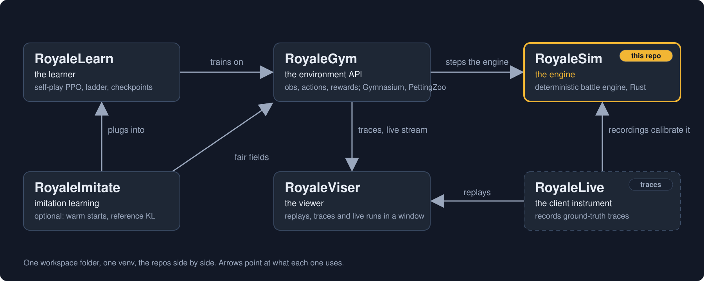
RoyaleSim is the bottom of the stack. It knows nothing about rewards, observations or training. If you are writing a bot, you will spend your time in RoyaleGym and RoyaleLearn, and this repo will just be the thing underneath that plays the match.
| Repo | What it is | What it is to RoyaleSim |
|---|---|---|
| RoyaleSim (this repo) | the battle engine, in Rust: whole-number arithmetic, same seed same battle, movement rules measured against recordings of real battles | the engine |
| RoyaleGym | the environment API: observations, actions, rewards; Gymnasium, PettingZoo and self-play envs | wraps royalesim as RustEngine, reads this repo's data/ for the arena and cards, and its test suite drives the engine from the outside |
| RoyaleLearn | the training harness: self-play rollouts, PPO, a ladder of frozen opponents, checkpoints | reaches the engine only through RoyaleGym |
| RoyaleViser | the viewer: recordings, engine traces and running environments in its own window | plays engine traces (a trace is the engine's own per-tick record of a battle) and live streams; the still in the first tile is one of its screenshots |
| RoyaleImitate | an optional add-on to RoyaleLearn: config sections that start a bot from saved weights and keep it near a reference policy while it learns | nothing directly. It plugs into RoyaleLearn and never reaches the engine |
| RoyaleLive | private. The client instrument that records ground-truth traces from real battles. | its recordings are the evidence the engine's constants are measured against |
What comes in: Supercell's card and arena tables under data/raw/, which tools/extract_*.py turn
into data/derived/. And recordings of real battles, which the constants were measured against.
Neither the recordings nor the 15.535 asset pack is distributed. A clone has the 2018 tables and
the committed 15.535 card table. The tests that need the pack or the recordings skip and say so.
What goes out: the royalesim module, one JSON state per step, engine traces that RoyaleGym records
and RoyaleViser plays, and the data/ folder every sibling reads. RoyaleGym finds it at
../RoyaleSim/data, or wherever ROYALESIM_DATA_DIR points.
Status¶
As of 2026-09-22, except where an item names a later commit.
Working:
- The full match loop: elixir, deploys, formations for multi-unit cards, fighting, Fireball, Arrows, Zap, The Log and Goblin Barrel, king activation, double elixir, 120 s overtime with triple elixir in its last minute, the 3-crown win and the tiebreak. Card levels and the tower ladder are measured on 2026 recordings.
- Cards. Of the card table's 145 rows the engine loads 136 and refuses 9, with a reason for
each refusal; the nine are event-only cards. 144 rows are the 15.535 client's own table; the 145th, the Minion Giant, is a
card the live client has and that table lacks, taken from a later client's table and added
last. The engine's own census reports 180 loadable, 9 rejected and 81 summon-only, and
those do not sum to 145 for a reason worth stating: the 180 is the 136 plus the King and
Princess towers plus 42 evolved forms (the
_EV1rows), which load as cards of their own, and the 81 summon-only are unit definitions that are not rows of the card table at all - a Barbarian is what Barbarians puts on the board, a BalloonBomb is what a Balloon drops, the MusketeerTurret is what the Hero Musketeer's ability makes, and no hand can play either. The three lists are disjoint and their union is 270: the 145 rows plus the 2 towers plus the 42 evolved forms plus those 81. Counts from the census atca49eba, againstcards.jsonFNV-1a 64 1b8121b10c3222cd. The loadable and refused lists are pinned row by row incrates/royalesim/tests/loadable_census.rs, which CI runs. The default card list holds every card that loads, the Miner, the Goblin Drill and the Mirror included, and the Minion Giant last. A clone reads the same 145-row table: it is committed rather than generated. The 2018 table, 78 cards, is still built beside it and still used by tests. - Evolved and hero forms for fifty-eight special cards: Evo Cannon, Evo Skeletons, Evo Musketeer, Evo
Elite Barbarians, Evo Zap, Evo Battle Ram, Evo Inferno Dragon, Evo Baby Dragon, Evo Royal Ghost,
Evo Skeleton Army, Evo Giant Snowball, Evo Skeleton Barrel, Evo Mortar, Evo Royal Hogs, Evo Minion Horde, Evo Tesla, Evo Royal Recruits, Evo Wizard, Evo Knight, Evo Barbarians, Evo Bomber, Evo Valkyrie, Evo Archer, Evo Royal Giant, Evo Mega Knight, Evo P.E.K.K.A., Evo Bats, Evo Wall Breakers, Evo Ice Spirits, Evo Firecracker, Evo Witch, Evo Goblin Cage, Evo Executioner, Evo Goblin Giant, Evo Princess, Evo Hunter, Evo Dart Goblin, Evo Furnace, Evo Electro Dragon, Evo Goblin Drill, Evo Goblin Barrel, Evo Lumberjack, Hero Musketeer, Hero Ice Golem, Hero Berserker, Hero Balloon,
Hero Valkyrie, Hero Wizard, Hero Mini P.E.K.K.A., Hero Knight, Hero Mega Minion, Hero Giant, Hero Magic
Archer, Hero Bowler, Hero Goblins, Hero Barbarian Barrel, Hero Dark Prince and Hero Tombstone.
reset(..., forms=...)marks a deck's card 1 for its evolution or 2 for its hero. Counting each card's own plays, an evolved card plays its evolution after its cycle of basic plays: two for most, one for the Elite Barbarians. A hero's ability is a button: a command on slot 4, 5 or 6, just past the four hand slots, presses it. What each form does was measured on client 15.535.29 where the tests say so; the rest are named constants. - The Golden Knight's button, at
5f75824. A press sends him dashing from one enemy to the next. A side has at most three buttons: its heroes' first, then its champion's. The champion's charge comes back 11 seconds after his dashes end, a figure not measured yet. Pressed with no enemy near, he runs at his target at twice his speed and dashes when it is in reach, as in the game. The Monk's hits run in his three-hit combo, the third pushing its target away. His button runs too: after its cast he stands, takes every hit at 35 % and sends enemy shots back at their shooters, once. The Archer Queen's button runs as well: for 3.5 seconds no enemy can target her and she shoots 2.8 times as fast, once. The Boss Bandit's, the Little Prince's and Goblinstein's buttons run too, and the Skeleton King's and the Mighty Miner's: every champion's button runs. - Mechanics measured against recordings of the game, and switchable in the constants file: route choice (743 of 744 routes node for node), how units push each other (99.24% of per-tick positions exact over 31 captures), reach and the attack cycle, the charged hit, knockback, the river hop, spawner timing and death spawns, the lifetime drain of buildings and the order things happen within a tick.
- Modelled, but not measured yet: most of how hiding buildings and status effects work (slow,
freeze, damage over time, and what happens when several stack). Those rules come from reasoning
about the card data, community write-ups or a best guess, and the constants file marks which.
A few parts are measured: how much a single rage speeds a unit up, how hard a Tornado pulls
(speed buffs do not change the pull, and a stunned or frozen unit is still pulled), what a stun
or a freeze does to the target and the swing of the unit it holds (at
7003b67), and that enemies can target a Tesla as soon as it starts to rise. At126992athe Rage and Heal cards load too. docs/mechanics.md lists what about them is not measured yet. - Same seed same battle, snapshots, and the deploy-legality query.
- An optional command delay, per side:
Battle.set_command_delay_ticks(blue, red). In the real game a play lands about 1.1 seconds (22 ticks) after the tap, and the card and the elixir only go when it lands. With a delay set, a play or a button press waits that long and is checked again when it runs. The default is no delay, which is how the engine always ran. - Seat symmetry is a test setting, not something the engine promises. The game itself treats the two seats a little differently in three measured places: where a ground deploy is clamped, the point it lands on, and how the pathfinder breaks a tie. The engine copies the game, so it is not symmetric either. The mirror tests run an arm where those three are made symmetric, and then check that Red is Blue turned 180 degrees on every tick.
Not modelled yet, in plain words:
- The 18 cards in
thin_slice(data/derived/cards.json) are the ones the engine has been checked on. For the other cards it loads from the 15.535 table, only some rules are measured against recordings, such as the Inferno damage ramp and the Mortar's minimum range. A few of those cards show up in tests of one mechanic, such as the Golem's death spawn. Some, such as the Mega Knight, carry a mechanic the engine does not read, and a deck of 8 drawn at random from everything it plays will most likely hold one. If you pick decks in code, draw them fromthin_slice. - Event-only morphs, air units beyond flying straight at their target, and tower troops. Evolutions, hero forms and champions' buttons beyond the ones above.
- The growing damage of the Inferno Tower and the Inferno Dragon on the 2018 table. That table
has no columns for it, so there the Infernos keep their first damage. (On the 15.535 table the
growing damage and the Mortar's minimum range run since
126992a, measured on the 16.402 corpus.) - One known collision defect: a unit overlapping several obstacles gets the push-outs summed instead of one chosen. The 47-tick overlap was retired on 2026-09-22 (docs/mechanics.md, Known defects).
- One recorded route in 744 comes out different. Both routes cost the same, and which one the game picks is the open question.
Tests. Both blocks below start from the Royale folder you made in stage 1, so go back there
before you run the second one.
Both suites are green on a clean runner, on Linux and Windows, at 38346f2. The Rust suite is
31 binaries, 374 passed, 0 failed and 3 ignored. The Python suite is 280 passed and 11 skipped.
Ruff clean. The commands for all three are below.
These replace the figures this page used to carry from the maintainer's laptop. A count true on one machine is not a certification, because a clean machine is the reader's.
Two conditions travel with them, or the numbers overstate what was run.
280 is the clean-runner population, which is smaller than this machine's and smaller than yours if you have the recordings. Eleven tests skip, and each says at the skip which kind of skip it is - several state outright that they are permanently local coverage rather than a setup step somebody forgot. A skip count is not a defect count and this suite will tell you which it is, per test.
The three ignored Rust tests are compiled and deliberately not executed, which is a different
thing from a test that decided at runtime it could not run. They are throughput_scripted_battle,
throughput_brawl_20_to_40_entities and throughput_scripted_battle_with_spells: benchmarks, run
on request.
What the runner found that this machine could not, in its first three runs, is the argument for
preferring it: 32 Rust tests that failed there and passed here, all of them the card table the
runner had no copy of; five modules that could not import numpy or msgspec, which the install
line did not name and everybody here already had; and clippy, which turned out never to have been
wired into CI at all and found real work on its first execution.
The rule behind that failure no longer ships. The failure was two Skeleton Army units
overlapping by more than 150 per cent of the smaller radius for 87 consecutive ticks, at worst
193 per cent, against a limit of 150 for 40. The cause was a rule that took a unit out of all
movement while it attacked, so nothing could push an attacking crowd apart. Since 2026-09-24 an
attacking unit still does not walk, but its neighbours can push it apart
(movement.ATTACKING_UNIT_MOVEMENT = separation_only). The old rule can still be switched back
on for an experiment. The 87 itself turned out to depend on how that one battle opened, so the
tests now build their own crowd: one checks that the old rule still packs it, and one checks that
the shipped rule keeps it apart. The 90-tick limit the engine is held to was not tightened with
the change, because the shipped rule's worst run on that battle had not been measured when the
rule changed.
That 87 was published here as 41 for most of a day, and the reason is worth more than the correction. The gate stopped counting the moment it had enough to fail: 40 allowed, one more, report 41. 41 was the threshold plus one, not the size of the defect. It became a measurement only when someone re-ran with the limit lifted. A fail-fast check reports its own bound, and a bound reads exactly like a measurement once it is written into a sentence.
The starting elixir moving from 5 to 6 did not create that defect. It created a battle that reached one already on the backlog, so the engine had carried it long before any test went red.
The Rust suite takes tens of minutes, and most of that is compiling the test binaries before the
first result appears. On a 4-CPU Linux machine on 2026-09-27 it took more than 26 minutes and
about 3 GB of memory. Run it before the Python suite. Any change under data/, even a file
rewritten with the same bytes, makes the next Rust run rebuild the engine and every test binary,
and at 1d661b0 the Python suite rewrites data/derived/globals.json.
On a clean runner at 38346f2 the Python suite was 280 passed and 11 skipped, and it takes a few minutes. Tests have been added since, so a run today collects more. A machine with the recordings collects more again.
The last line is the lint, and it prints All checks passed! when it is clean.
Both counts come from the clean runner at 38346f2, so they describe that commit and not a later one.
The cargo run above assumes the 15.535 card table, as described under Install. On a 2018-only
checkout levels.rs and jump16402.rs go red for want of it. RoyaleGym's suite drives the engine
from the outside and must stay green too.
Read next: docs/architecture.md (how the engine is built),
docs/pathfinding.md (the measured routes and contact law, with the
evidence), docs/mechanics.md (what is modelled, what is not, the defects),
docs/contributing.md (the build loop and every gate),
docs/calibration.md (the constants file and its status vocabulary).
docs/README.md indexes the rest.
Community¶
Engine questions, calibration evidence and pathfinding work happen in the project's Discord: https://discord.gg/4D2BS5JBHP
Issues and pull requests on this repo are welcome too.